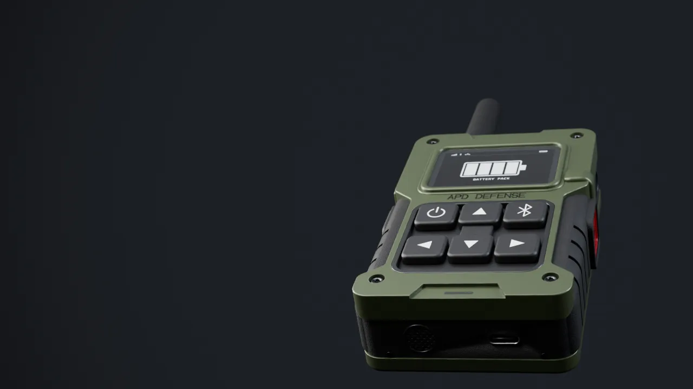
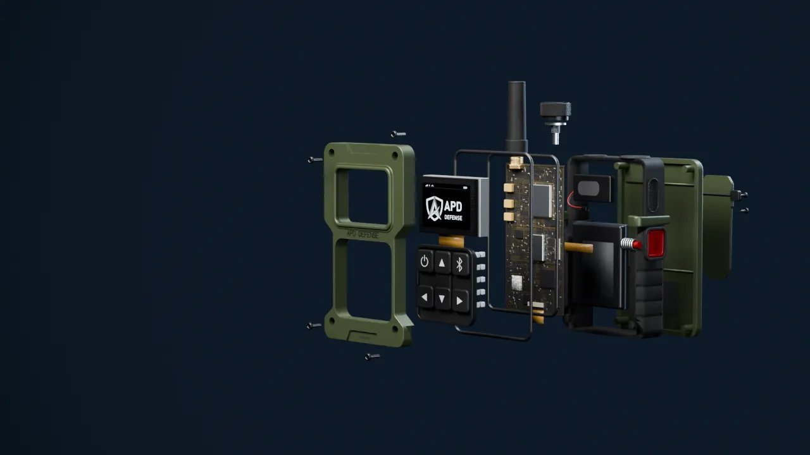
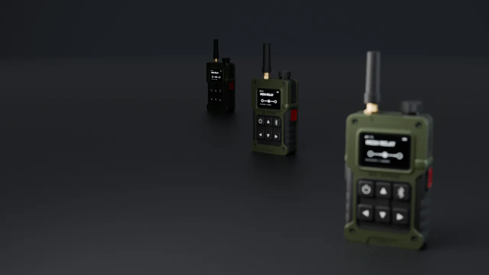
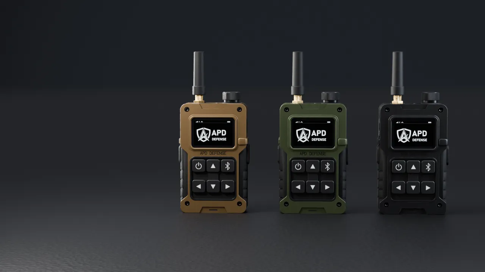
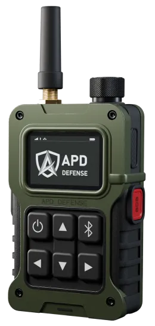
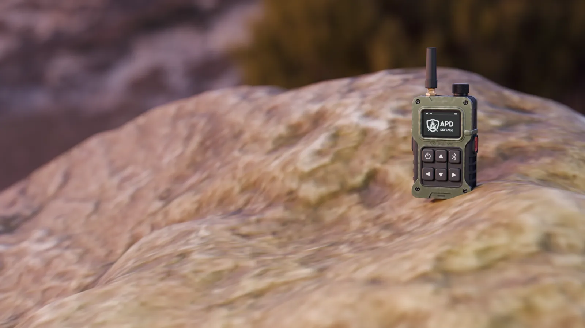
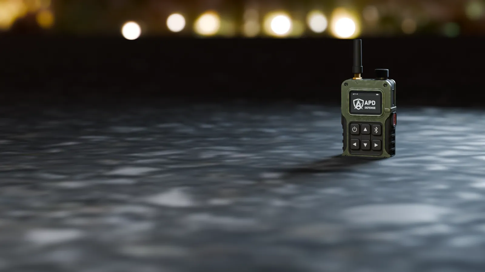
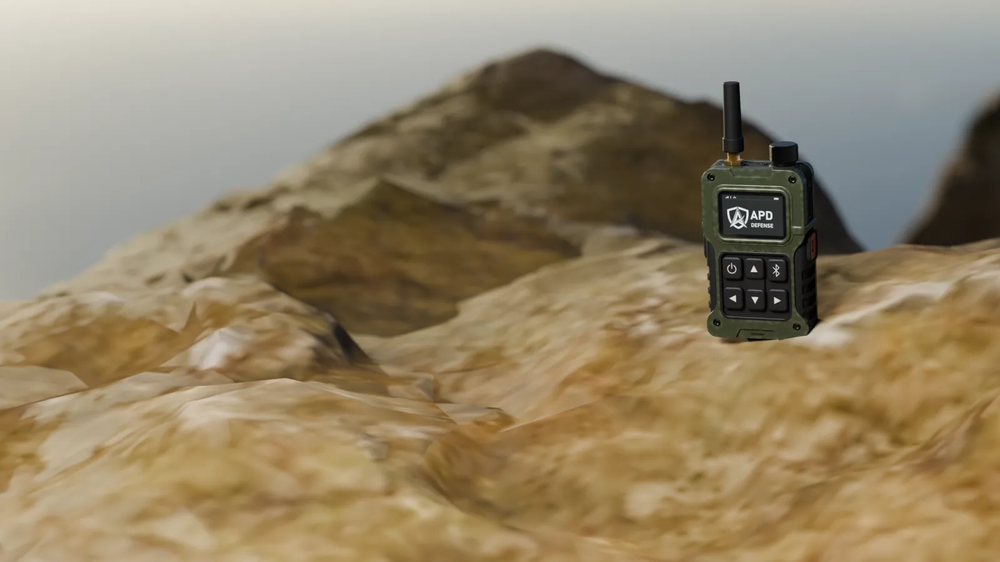
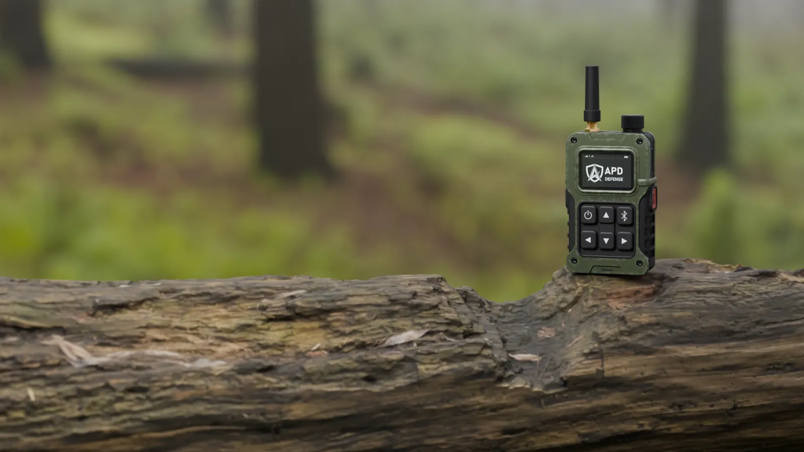

Frequency hopping mesh comms for real world conditions.
A wearable data radio for places the phone network doesn’t reach. No towers, accounts or internet to set up.
Prototype, not for sale.
A wearable data radio for places the phone network doesn’t reach. No towers, accounts or internet to set up.
Prototype, not for sale.

One-press distress alert with live team GPS.

Multi-day field runtime.

One radio, drawn apart and put back together.
Rapid channel agility against jamming & detection.
Key-driven schedules with no predictable pattern.
Hardware-isolated key & link protection.
Telemetry, position updates & payload transfer.

Dynamic multi-hop routing across terrain.
Channel-hopping voice routed across nodes as repeaters.
Real-time squad positions on a shared map.

OD Green · Coyote Tan · Black
Progressive emission tightening to stay low-profile.
Direct team situational awareness integration.
Low-overhead text dispatch.

Gasketed against wet terrain, mud & immersion.
Two parts, designed to work as one.

Settings
Device
No radio connected
Goose
Map
Heading up
Messages that pass from radio to radio.
It is designed to relay traffic across a team mesh. Pick a radio on the map, then send a message to watch it pass along.
From Maverick
Type on the phone.
Write a message in the app, then one tap.
Your radio sends it.
The phone hands the message to your radio over Bluetooth.
Radios pass it along.
The radios are designed to relay it from one team member to the next.
It shows up on their phone.
Replies come back the same way.
Four-category triage board with a live tally and filters
9-line MEDEVAC builder
One radio, one phone, over Bluetooth.
No towers, accounts or internet to set up.

Teams that work beyond the network.

Teams that need to message where the network does not reach.

Crews that search where there is no signal.

Hikers, campers and preppers, beyond the last tower.
Use of the radio or app by any agency, unit or customer is not implied. Prototype, not for sale.
| Controls | 6-key pad. |
|---|---|
| Top | Knob for power and volume. Antenna. |
| Left side | Kenwood 2-pin audio jack. PTT pad. |
| Right side | Gated, recessed SOS button. |
| Front | Display. Microphone at the bottom. |
| Back | Speaker, so the radio can be worn face-in. Belt clip. |
| Underside | One USB-C port. Rechargeable. |
| Colors | OD Green, Coyote Tan, Black. |
| Phone link | One radio, one phone, over Bluetooth. |
| Network | No towers, accounts or internet to set up. |
| Weather | Waterproof. |
| Status | Prototype, not for sale. |
Prototype, not for sale.
This device has not been authorized as required by the rules of the Federal Communications Commission. This device is not, and may not be, offered for sale or lease, or sold or leased, until authorization is obtained.
A wearable data radio for places the phone network doesn’t reach. No towers, accounts or internet to set up.
Messages that pass from radio to radio.
Built for teams that work beyond the network.
Teams in the field. Law enforcement. Search and rescue. Civilians in the woods.
Use of the radio or app by any agency, unit or customer is not implied. Prototype, not for sale.
We are building a civilian radio for US customers. Tell us you are interested and we will email you when our civilian radio is available.
This is not an order. We are not taking money, deposits or payment details, and no radio will be sold or delivered to a customer before FCC authorization.
We are building a civilian radio for US customers. Tell us you are interested and we will email you when our civilian radio is available.
This is not an order. We are not taking money, deposits or payment details, and no radio will be sold or delivered to a customer before FCC authorization.